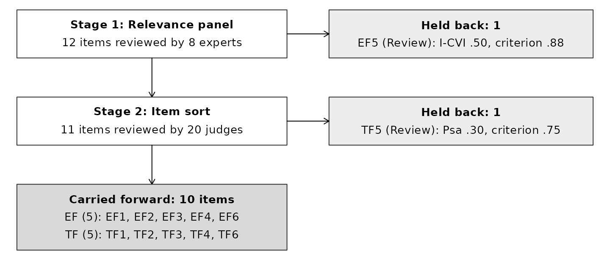
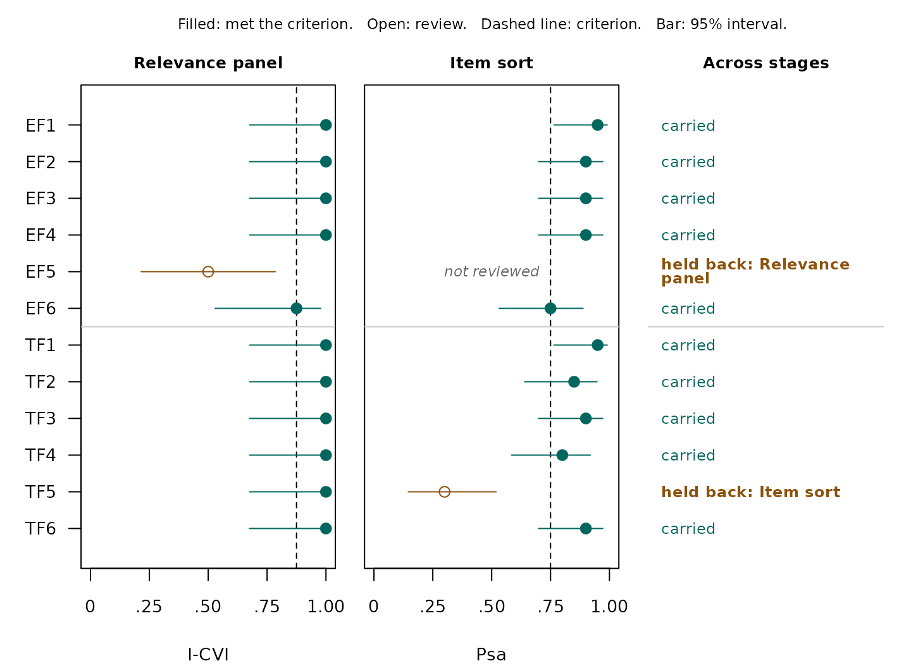

Purpose
This vignette provides reporting scaffolds for the three flagship workflows. The examples are intentionally conservative: statistical screening is described as evidence for retention or review, not as proof that an item or scale is content valid. Final decisions should also consider construct-domain coverage, item wording, qualitative judge feedback, and the intended use of the measure.
The bundled CSV files are synthetic, deterministic, and regenerated
from data-raw/build-example-data.R. They are useful for
reproducing the examples and for seeing the expected input shape before
analyzing a new study.
Item-sort study
The tables below are columns of the fitted objects, rounded for
display by a small helper; the objects themselves keep full precision,
and content_report() gives the formatted APA table.
# Round the numeric columns of a data frame for display only. A p value is
# written as APA writes it, so one below .001 reads "< .001", never 0.
rounded <- function(d, digits = 3) {
is_p <- grepl("(^p_|_p$)", names(d))
d[] <- Map(function(v, p) {
if (!is.numeric(v)) return(v)
if (p) return(ifelse(v < .001, "< .001", sub("^0", "", sprintf("%.3f", v))))
round(v, digits)
}, d, is_p)
d
}
sort_dat <- read_example("sort_example.csv")
sort_fit <- sort_validity(sort_dat)
sort_sum <- summary(sort_fit)
rounded(sort_fit$results[, c("item", "target", "psa", "csv", "p_value",
"recommendation")])
#> item target psa csv p_value recommendation
#> 1 A1 A 0.90 0.85 < .001 Retain
#> 2 A2 A 0.75 0.60 .021 Retain
#> 3 B1 B 0.85 0.75 .001 Retain
#> 4 B2 B 0.65 0.40 .132 Review
#> 5 C1 C 0.90 0.85 < .001 Retain
#> 6 C2 C 0.70 0.50 .058 Review
rounded(sort_fit$scale_summary[, c("target", "n_items", "mean_psa",
"psa_strength", "mean_csv",
"csv_strength")])
#> target n_items mean_psa psa_strength mean_csv csv_strength
#> 1 A 2 0.825 Strong 0.725 Strong
#> 2 B 2 0.750 Moderate 0.575 Moderate
#> 3 C 2 0.800 Moderate 0.675 StrongMethods scaffold
Report who completed the sort, how the construct definitions were presented, the available assignment alternatives, and the a priori screening rule. A concise methods statement can follow this structure:
Candidate items were evaluated in an item-sort pretest in which judges assigned each item to the construct definition that best represented its content. We quantified definitional correspondence using the proportion of substantive agreement (Psa) and definitional distinctiveness using the substantive-validity coefficient (Csv). Item-level screening used the exact target-assignment test described by Howard and Melloy (2016), with the null target-assignment probability and alpha specified a priori. Target-scale mean Psa and Csv were interpreted against Colquitt et al. (2019) norms only when the judge population matched the intended use of those norms.
Results scaffold
For this bundled example, 20 judges evaluated 6 items. 4 items met the exact screening criterion, 2 were flagged for review, and 0 had insufficient usable assignments.
content_report() gives the manuscript table: the columns
a reader needs, with numbers in APA form.
format = "markdown" gives the same table to paste into a
manuscript, and format = "data.frame" the rounded numbers.
The unrounded values stay in sort_fit$results.
content_report(sort_fit)
#> <contentvalid_report> Results table in APA style
#>
#> Item Target Judges Competitor Psa 95% CI Csv p Decision
#> A1 A 18/20 B; C .90 [.70, .97] .85 < .001 Retain
#> A2 A 15/20 B .75 [.53, .89] .60 .021 Retain
#> B1 B 17/20 A .85 [.64, .95] .75 .001 Retain
#> B2 B 13/20 A .65 [.43, .82] .40 .132 Review
#> C1 C 18/20 A; B .90 [.70, .97] .85 < .001 Retain
#> C2 C 14/20 B .70 [.48, .85] .50 .058 Review
#>
#> Note. Psa = proportion of substantive agreement; CI = confidence interval;
#> Csv = coefficient of substantive validity. Judges = target assignments, out of
#> the judges who sorted the item. 95% CI = Wilson score confidence interval.
#> Retain = at least the number of target assignments the exact one-sided
#> binomial test needs at alpha = .05 with p0 = .50 (Howard & Melloy, 2016).
#>
#> See content_report(fit, format = "markdown") for the table as Markdown, ready
#> for a manuscript.In an R Markdown or Quarto document, print the Markdown form from a
chunk with the option results = "asis", so the lines reach
the document as Markdown and render as a table with its note. Without
that option they print as code output. This chunk uses it:
content_report(sort_fit, format = "markdown")| Item | Target | Judges | Competitor | Psa | 95% CI | Csv | p | Decision |
|---|---|---|---|---|---|---|---|---|
| A1 | A | 18/20 | B; C | .90 | [.70, .97] | .85 | < .001 | Retain |
| A2 | A | 15/20 | B | .75 | [.53, .89] | .60 | .021 | Retain |
| B1 | B | 17/20 | A | .85 | [.64, .95] | .75 | .001 | Retain |
| B2 | B | 13/20 | A | .65 | [.43, .82] | .40 | .132 | Review |
| C1 | C | 18/20 | A; B | .90 | [.70, .97] | .85 | < .001 | Retain |
| C2 | C | 14/20 | B | .70 | [.48, .85] | .50 | .058 | Review |
Note. Psa = proportion of substantive agreement; CI = confidence interval; Csv = coefficient of substantive validity. Judges = target assignments, out of the judges who sorted the item. 95% CI = Wilson score confidence interval. Retain = at least the number of target assignments the exact one-sided binomial test needs at alpha = .05 with p0 = .50 (Howard & Melloy, 2016).
Do not report Review as synonymous with deletion. A
review flag identifies an item for substantive inspection; retaining an
item for domain coverage can be a reasonable decision when that
rationale is documented.
Construct-rating study
rating_dat <- read_example("rating_example.csv")
rating_fit <- rating_validity(rating_dat, scale_min = 1, scale_max = 5)
rating_sum <- summary(rating_fit)
rounded(rating_fit$results[, c("item", "target", "htc", "htd", "p_value",
"max_contrast_p", "recommendation")])
#> item target htc htd p_value max_contrast_p recommendation
#> 1 A1 A 0.933 0.667 < .001 < .001 Retain
#> 2 A2 A 0.733 0.208 < .001 .052 Review
#> 3 B1 B 0.933 0.667 < .001 < .001 Retain
#> 4 B2 B 0.733 0.208 < .001 .052 Review
#> 5 C1 C 0.933 0.667 < .001 < .001 Retain
#> 6 C2 C 0.733 0.208 < .001 .052 Review
rounded(rating_fit$scale_summary[, c("target", "n_items", "mean_htc",
"htc_strength", "mean_htd",
"htd_strength")])
#> target n_items mean_htc htc_strength mean_htd htd_strength
#> 1 A 2 0.833 Weak 0.438 Very Strong
#> 2 B 2 0.833 Weak 0.438 Very Strong
#> 3 C 2 0.833 Weak 0.438 Very StrongMethods scaffold
Judges rated every candidate item against each focal and orbiting construct definition using the same response scale. We summarized correspondence with HTC and distinctiveness with HTD (Hinkin & Tracey, 1999; Colquitt et al., 2019). Because the same judges rated the competing definitions, item-level inference used a one-way repeated-measures ANOVA followed by planned contrasts (MacKenzie et al., 2011). The omnibus test was Greenhouse-Geisser corrected (Greenhouse & Geisser, 1959), and one-sided paired contrasts compared each item’s intended definition with every orbiting definition. Scale-level HTC/HTD norms from Colquitt et al. (2019) were treated as empirical benchmarks rather than universal item cutoffs.
Results scaffold
The example contains 6 items rated by 24 judges against 3 construct definitions. 3 items were supported by the complete screening rule and 3 were flagged for review.
content_report(rating_fit)
#> <contentvalid_report> Results table in APA style
#>
#> Item Target Judges HTC HTD F test p Contrast p Decision
#> A1 A 24 .93 .67 F(1.53, 35.18) = 237.08 < .001 < .001 Retain
#> A2 A 24 .73 .21 F(1.39, 32.00) = 37.38 < .001 .052 Review
#> B1 B 24 .93 .67 F(1.53, 35.18) = 237.08 < .001 < .001 Retain
#> B2 B 24 .73 .21 F(1.39, 32.00) = 37.38 < .001 .052 Review
#> C1 C 24 .93 .67 F(1.53, 35.18) = 237.08 < .001 < .001 Retain
#> C2 C 24 .73 .21 F(1.39, 32.00) = 37.38 < .001 .052 Review
#>
#> Note. HTC = Hinkin-Tracey correspondence; HTD = Hinkin-Tracey distinctiveness.
#> Judges = judges who rated the item against every construct.
#> F test = within-judge omnibus test, with Greenhouse-Geisser corrected degrees
#> of freedom where the correction applied. Contrast p = the largest one-sided p
#> among the planned contrasts of the intended construct with each other
#> construct. Retain = omnibus p and every one-sided contrast p at or below
#> alpha = .05 (MacKenzie et al., 2011).
#>
#> See content_report(fit, format = "markdown") for the table as Markdown, ready
#> for a manuscript.For review items, report the strongest orbiting competitor, which
rating_fit$results holds as
strongest_competitor. That information turns a generic
statement about weak distinctiveness into a specific diagnostic about
where construct overlap may be occurring.
Expert-panel study
Relevance
expert_rel <- read_example("expert_relevance_example.csv")
expert_rel_matrix <- as.matrix(expert_rel[setdiff(names(expert_rel), "expert")])
expert_fit <- expert_validity(
expert_rel_matrix,
mode = "relevance",
lo = 1,
hi = 4
)
expert_sum <- summary(expert_fit)
rounded(expert_fit$results[, c("item", "N", "V", "I_CVI", "kappa_mod",
"recommendation")])
#> item N V I_CVI kappa_mod recommendation
#> 1 Item1 8 1.000 1.00 1.000 Strong support
#> 2 Item2 8 0.917 1.00 1.000 Strong support
#> 3 Item3 8 0.833 1.00 1.000 Strong support
#> 4 Item4 8 0.583 0.75 0.719 Review
#> 5 Item5 8 0.417 0.25 0.158 Review
rounded(expert_fit$scale_summary[, c("n_items", "mean_Aiken_V", "S_CVI_Ave",
"S_CVI_UA", "agreement")])
#> n_items mean_Aiken_V S_CVI_Ave S_CVI_UA agreement
#> 1 5 0.75 0.8 0.6 0.693Experts rated the relevance of each candidate item on a bounded ordinal scale. We summarized relevance using Aiken’s V with Penfield-Giacobbi score confidence intervals and calculated I-CVI with the modified kappa of Polit et al. (2007). S-CVI/Ave and S-CVI/UA were reported at the scale level. Panel-size CVI guidelines were used as review aids and were considered alongside written expert feedback and construct coverage.
In this example, 8 experts evaluated 5 items. The workflow identifies 3 supported items and 2 review items under its quantitative rules.
Essentiality
expert_ess <- read_example("expert_essentiality_example.csv")
expert_ess_matrix <- as.matrix(expert_ess[setdiff(names(expert_ess), "expert")])
ess_fit <- expert_validity(expert_ess_matrix, mode = "essentiality")
rounded(ess_fit$results[, c("item", "ne", "N", "cvr", "p_value",
"critical_ne", "recommendation")])
#> item ne N cvr p_value critical_ne recommendation
#> 1 Item1 11 12 0.833 .003 10 Supported
#> 2 Item2 10 12 0.667 .019 10 Supported
#> 3 Item3 8 12 0.333 .194 10 Review
#> 4 Item4 6 12 0.000 .613 10 ReviewFor an essentiality task, state that CVR is tied to a different expert judgment than relevance. Report the effective panel size and exact critical essential count for each item rather than borrowing a relevance/CVI threshold.
Congruence
expert_ioc <- read_example("expert_congruence_example.csv")
ioc_fit <- expert_validity(expert_ioc, mode = "congruence")
rounded(ioc_fit$results[, c("item", "target", "target_ioc", "target_mean",
"strongest_competitor", "margin",
"recommendation")])
#> item target target_ioc target_mean strongest_competitor margin recommendation
#> 1 I1 A 0.917 1.000 B 1.667 Congruent
#> 2 I2 B 0.875 1.000 A 1.667 Congruent
#> 3 I3 C 0.458 0.833 B 0.333 ReviewFor congruence, report each item’s intended objective, its index of
item-objective congruence against the criterion (ioc_cut,
by default the .70 Rovinelli and Hambleton applied), and the decision.
The experts’ mean ratings on the intended objective and on the other
objective with the highest mean rating, and the margin between them,
describe the index; they are not part of its criterion.
Figures across review stages
Most studies gather more than one kind of content evidence.
content_evidence() brings the stages together, in the order
they ran, and draws two figures for a paper or poster. Here the twelve
items of vignette("one-item-set-both-stages") are first
rated for relevance by eight experts, and the items the panel carries go
on to the item sort. The relevance ratings are constructed for this
example; data-raw/build-walkthrough-panel.R says what each
item’s ratings are built to show.
relevance <- read_example("walkthrough_relevance.csv")
panel <- content_handoff(expert_validity(
as.matrix(relevance[setdiff(names(relevance), "expert")]),
mode = "relevance", lo = 1, hi = 4, agreement = "none"
))
sorted <- read_example("walkthrough_sort.csv")
sort_stage <- sort_validity(sorted[sorted$item %in% panel$items, ])
evidence <- content_evidence(`Relevance panel` = panel, `Item sort` = sort_stage)
evidence
#> <contentvalid_evidence> Content evidence across 2 stages
#> 10 of 12 items carried by every stage that reviewed them. Held back: EF5
#> (Relevance panel), TF5 (Item sort).
#>
#> Stages, in order
#> 1. Relevance panel: 12 items, 8 experts. Shows I-CVI.
#> 2. Item sort: 11 items, 20 judges. Shows Psa.
#>
#> Item Relevance panel Item sort Result
#> EF1 1.00 Strong support .95 Retain Carried
#> EF2 1.00 Strong support .90 Retain Carried
#> EF3 1.00 Strong support .90 Retain Carried
#> EF4 1.00 Strong support .90 Retain Carried
#> EF5 .50 Review -- Held back: 1
#> EF6 .88 Strong support .75 Retain Carried
#> TF1 1.00 Strong support .95 Retain Carried
#> TF2 1.00 Strong support .85 Retain Carried
#> TF3 1.00 Strong support .90 Retain Carried
#> TF4 1.00 Strong support .80 Retain Carried
#> TF5 1.00 Strong support .30 Review Held back: 2
#> TF6 1.00 Strong support .90 Retain Carried
#>
#> What these columns mean
#> I-CVI -- Item-level Content Validity Index. Share of experts rating the item
#> relevant, against Lynn's criterion for the panel size (beyond ten, this
#> package's).
#> Psa -- Proportion of Substantive Agreement. Share of judges who put the item
#> in the construct it was written for (0 to 1; higher is stronger).
#> Result -- Carried when every stage that reviewed the item carried it;
#> otherwise the numbers of the stages that held it back, as listed above.
#> A "--" marks a stage that did not review the item.
#>
#> Full definitions: contentvalid_glossary(). To hide this key:
#> options(contentvalidR.show_key = FALSE).
#>
#> See plot(x) for the evidence profile and plot(x, type = "flow") for the flow
#> diagram; add apa = FALSE for color.The flow diagram follows the items through the stages. It is modeled on the PRISMA 2020 flow diagram for systematic reviews (Page et al., 2021), with items in place of studies, and it is the figure a Method section needs: what each stage reviewed, what it held back and why, and what went forward.
plot(evidence, type = "flow")
The evidence profile sets the stages side by side, item by item. Each panel shows the statistic that stage’s decision read, its 95% interval, and its criterion as a dashed line; a filled symbol met the criterion and an open one was flagged for review.
plot(evidence)Read across a row and the sources can disagree. Every expert rated
TF5 relevant; only the sort shows that judges place it in
the other facet. Read down a panel and the intervals speak: an I-CVI of
1.00 from eight experts has an interval reaching down to about .68, a
reminder of how small a panel is.
Both figures are gray by default, as an APA figure is printed. For
slides or a poster, apa = FALSE draws them in color, teal
for evidence that met its criterion and brown for evidence under review.
The symbols carry the same decisions, so no reading depends on
color.
plot(evidence, apa = FALSE)
A caption for the profile might read: Content evidence for twelve draft items. Left: the share of eight experts rating each item relevant (I-CVI), with 95% Wilson score intervals and Lynn’s (1986) criterion of 7 of 8. Right: the share of 20 judges assigning each item to its intended facet (Psa), with 95% Wilson score intervals and the exact test’s criterion of 15 of 20 (Howard & Melloy, 2016). Filled symbols met the criterion; open symbols were flagged for review.
Minimum reproducibility statement
At minimum, a manuscript or supplement should identify the package version and record the analysis settings that determine the results. For a fitted workflow:
packageVersion("contentvalidR")
#> [1] '0.10.1.9000'
sort_fit$settings
#> $method
#> [1] "Anderson-Gerbing Psa/Csv with Howard-Melloy exact inference"
#>
#> $item_inference
#> [1] "Howard-Melloy exact target-count test"
#>
#> $scale_benchmarks
#> [1] "Colquitt et al. (2019) empirical percentile norms"
#>
#> $p0
#> [1] 0.5
#>
#> $alpha
#> [1] 0.05
#>
#> $judge_type
#> [1] "naive"
#>
#> $proportion_ci
#> [1] "wilson"
sort_fit$design
#> $type
#> [1] "item-sort"
#>
#> $n_items
#> [1] 6
#>
#> $n_raters
#> [1] 20
#>
#> $n_judges_min
#> [1] 20
#>
#> $n_judges_max
#> [1] 20
#>
#> $n_missing
#> [1] 0
#>
#> $n_target_scales
#> [1] 3
#>
#> $n_constructs_observed
#> [1] 3
#>
#> $n_constructs_given
#> [1] FALSEA strong reproducibility supplement should also archive the item wording, construct definitions, judge instructions, anonymized response data when permitted, and the script that reproduces all tables and figures.
Language to avoid
Avoid claims such as “the scale was proven content valid” or “items failing the cutoff were invalid.” The workflows quantify evidence from a defined pretest. They do not replace a theory-based definition of the construct domain or the researcher’s responsibility to justify substantive item decisions.
References
Colquitt, J. A., Sabey, T. B., Rodell, J. B., & Hill, E. T. (2019). Content validation guidelines: Evaluation criteria for definitional correspondence and definitional distinctiveness. Journal of Applied Psychology, 104(10), 1243–1265. https://doi.org/10.1037/apl0000406
Greenhouse, S. W., & Geisser, S. (1959). On methods in the analysis of profile data. Psychometrika, 24(2), 95–112. https://doi.org/10.1007/BF02289823
Hinkin, T. R., & Tracey, J. B. (1999). An analysis of variance approach to content validation. Organizational Research Methods, 2(2), 175–186. https://doi.org/10.1177/109442819922004
Howard, M. C., & Melloy, R. C. (2016). Evaluating item-sort task methods: The presentation of a new statistical significance formula and methodological best practices. Journal of Business and Psychology, 31(1), 173–186. https://doi.org/10.1007/s10869-015-9404-y
Lynn, M. R. (1986). Determination and quantification of content validity. Nursing Research, 35(6), 382–385. https://doi.org/10.1097/00006199-198611000-00017
MacKenzie, S. B., Podsakoff, P. M., & Podsakoff, N. P. (2011). Construct measurement and validation procedures in MIS and behavioral research: Integrating new and existing techniques. MIS Quarterly, 35(2), 293–334. https://doi.org/10.2307/23044045
Page, M. J., McKenzie, J. E., Bossuyt, P. M., Boutron, I., Hoffmann, T. C., Mulrow, C. D., Shamseer, L., Tetzlaff, J. M., Akl, E. A., Brennan, S. E., Chou, R., Glanville, J., Grimshaw, J. M., Hróbjartsson, A., Lalu, M. M., Li, T., Loder, E. W., Mayo-Wilson, E., McDonald, S., . . . Moher, D. (2021). The PRISMA 2020 statement: An updated guideline for reporting systematic reviews. BMJ, 372, Article n71. https://doi.org/10.1136/bmj.n71